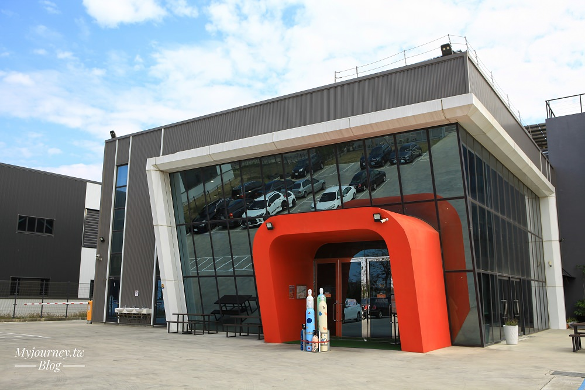

| 太平雲梯｜冷研探索館｜KANO園區｜檜意生活村 | |
太平雲梯 |
|
太平雲梯長度281公尺、海拔約1000公尺，為全台海拔最高之景觀吊橋。吊橋從梅山太平村望風台橫跨三原彩虹瀑布通往龜山，讓旅客能俯瞰嘉義風光還能欣賞雲海風景，可將知名的梅山36彎美景盡收眼底，甚至能遠眺嘉南平原。 營業時間 門票 １、全票100元；適用一般民眾、外籍旅客 網站：太平雲梯 地址：嘉義縣梅山鄉太平村下坑仔5號 資料來源:阿里山國家風景區網站 top |
|
探索嘉義秘境一日遊，於山海間來趟舒適平地之旅，造訪南部旅遊最新熱門親子景點，一同沉浸樂於實驗求知，體驗乾冰帶來無限想像的樂趣！採半開放式的手作DIY教室，在無拘束的環境氛圍裡，打造獨一無二的作品來成就每份源自巧思的創意吧！手作體驗多以二氧化碳為主體，讓孩子動手玩科學。在碳索館內，除了科普知識的傳達，也能透過實際體驗 Do it and learn，在館內有學校課本上學不到的知識，也是一個可以讓孩童放心學習及成長的空間。 營業時間 星期一 休息 網站： 冷研探索館 地址： 嘉義縣鹿草鄉園區一路38號 資料來源：冷研探索館網站 top |
|
|  | |
嘉市KANO園區，106年8月落成，讓大家重新看到嘉義市令人驕傲的棒球史。 像是在家庭教育中心對面的戶外音樂劇場、棒球雕塑區，有銅製的球棒、手套座椅。地面上鑲嵌著石板，仔細一看，原來是電影《KANO》裡的台詞。例如，「沒有退路的木瓜樹，一定會長出肥美的果實」、「想要打好棒球沒有捷徑，只有苦練」。 寬40公尺、長180公尺的「棒球世紀大道」，是以前嘉農棒球隊前往球場的必經之路。不管是地面上的石板，或是旁邊的棒球名人牆，都用心呈現嘉農棒球隊的發跡史，介紹當年打入甲子園亞軍的16名球員。 當然更不能錯過重達4公噸、直徑5公尺的KANO景觀球，以鋁合金製作，鑲嵌超過120個鏤空圈環，白天陽光閃耀、晚上七彩燈光秀，各有不同風情。想要玩借位拍攝，這裡也很適合！無論是要把球放在手中、或是踢球搞怪，各個方位都可以拍出創意！ 營業時間 星期日～星期六24 小時營業 地址：嘉義市東區山仔頂249-1號 資料來源:嘉義旅遊網 top |
|
阿里山，不僅以壯闊優美的景色享譽全球，更因擁有豐富的森林物產，造就嘉義市成為林業之都的美譽。一條阿里山鐵路，牽引出了一段林業故事的風華起落。待繁華落盡後，沉澱下來的則是一幕幕的回憶。檜町，如今的檜意森活村，成為了這段歷史的見證，回憶的背景。日治時期，檜町正是基於阿里山林業開發所建立的官方宿舍。因為建材多以阿里山檜木為主，使整個區域仿如檜木村，因此當時名為「檜町」，其後再改名「檜村里」。 營業時間 星期日 10:00–18:00 網站：檜意生活村 地址：嘉義市東區共和路370號 資料來源:檜意森活村網站 top |
|